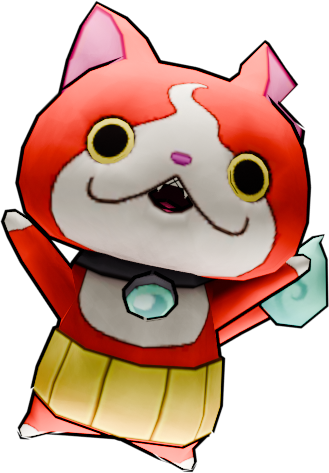
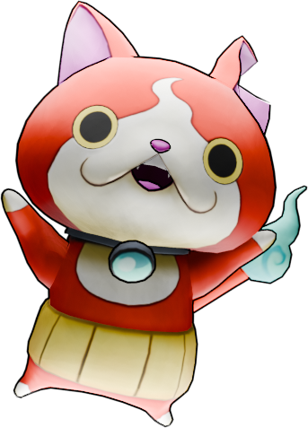
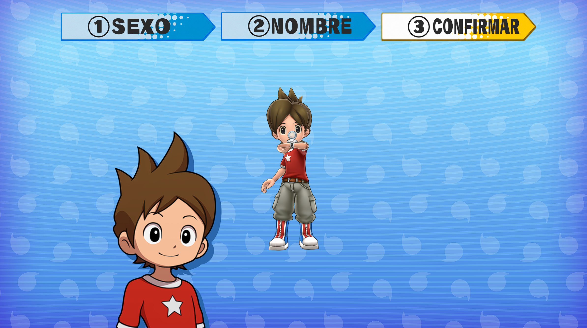
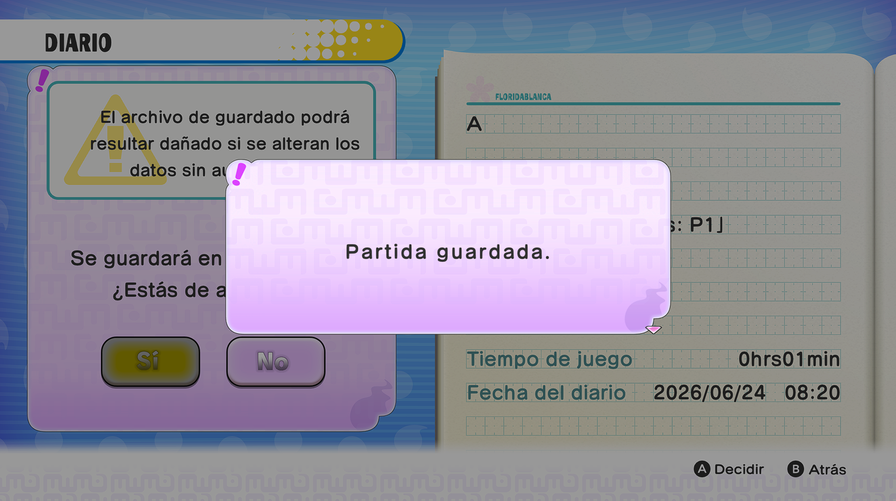
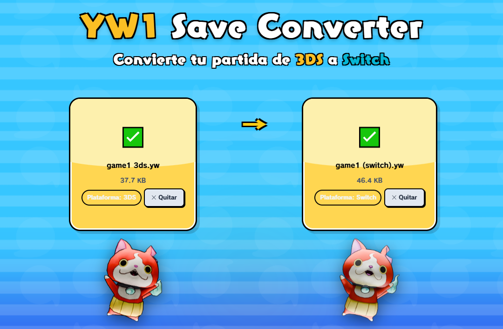
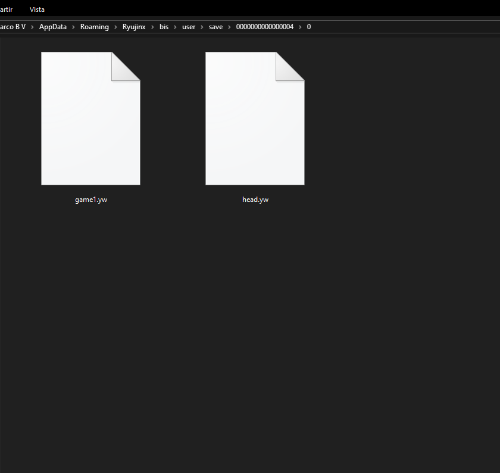
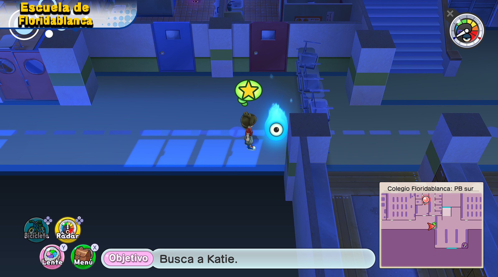
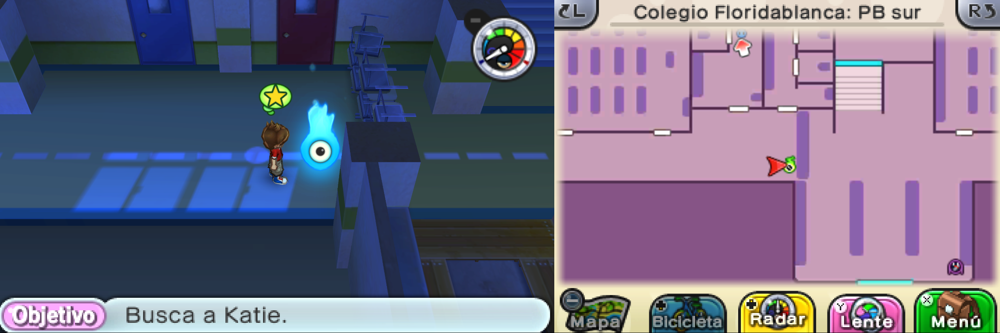
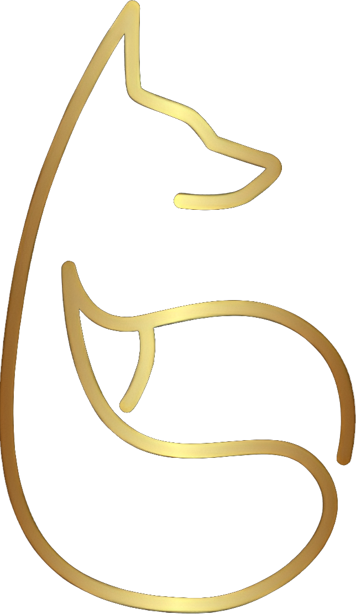

YW1 Save Converter
Convierte tu partida de 3DS a Switch
Partida 3DS
.yw
Arrastra tu archivo aquí o haz clic para buscar

Plantilla Switch
.yw
Arrastra tu archivo aquí o haz clic para buscar

Carga ambos archivos para comenzar
Error en la Conversión
Guía de Traspaso
Paso 1
Borra (o mueve a otra carpeta) todos los datos de guardado que tengas de YW1 de Switch, empieza una nueva partida y guarda partida en cuanto puedas.


Paso 2
Obtén tu partida de 3DS y la partida que acabas de guardar en Switch.
Paso 3
Pon en esta página los archivos correspondientes y descarga el resultado.

Paso 4
Reemplaza el archivo resultante por la partida que creaste antes en YW1 de Switch (en nuestro caso es game1, pero puede ser game2 o game3 en caso de que lo hayas puesto en otro slot).

Paso 5
Abre el juego y dale a continuar. Verás que al principio sigue saliendo la partida que creamos antes, pero esto es solo visual, al darle, estarás en tu partida.


Extra: Cosas a tener en cuenta
Los Yo-kai que tengas equipados en ese momento no se guardan, pero siempre puedes ir al ignóculo para volver a equipartelos. Esta herramienta es experimental, así que puede que haya cosas que no se hayan pasado correctamente.
¿Quieres ver el proceso en vídeo?
Aquí tienes un videotutorial paso a paso que muestra todo el proceso visualmente:
▶ Ver Tutorial de Traspaso en YouTube
Project Make a Dream Discord